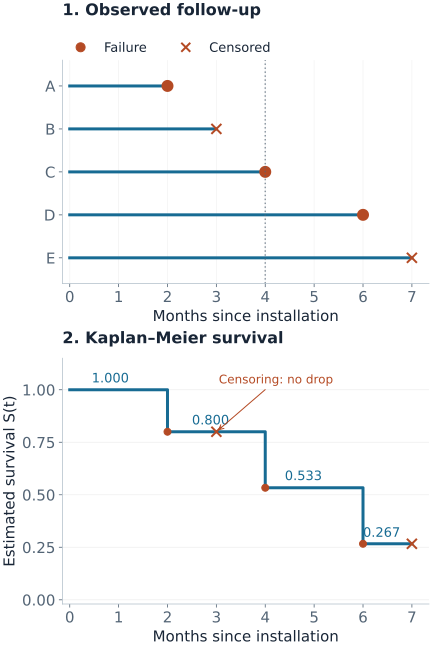

Censored and Survival Regression
Suppose you track machines from installation until their first failure. One fails after two months; another is still working when monitoring stops after three months. The second machine's lifetime is longer than three months, not equal to three months. Survival analysis keeps that distinction while estimating how event risk changes over time.
“Survival” means remaining free of the event you defined. The event can be failure, churn, recovery, or another first occurrence. Start by specifying the event, the time origin, and when observation ends.
Five Timelines, One Dataset
All five machines below start observation at month zero. Record $t_i=\min(T_i,C_i)$ and $\delta_i=\mathbf1(T_i\le C_i)$, where $T_i$ is the event time and $C_i$ is the censoring time. The baseline score $x_i$ will be used later in the Cox example.
| Machine | Observed time $t_i$ | Event $\delta_i$ | What is known | Score $x_i$ |
|---|---|---|---|---|
| A | 2 | 1 | Failed at month 2 | 0 |
| B | 3 | 0 | Still working when monitoring stopped | 1 |
| C | 4 | 1 | Failed at month 4 | 1 |
| D | 6 | 1 | Failed at month 6 | 0 |
| E | 7 | 0 | Still working at the end of the study | $-1$ |

Build the Kaplan–Meier Curve from Risk Sets
The risk set contains machines that are still observed and have not yet failed immediately before a given time. At event time $t_j$, let $n_j$ be the number at risk and $d_j$ the number of failures. The estimated conditional probability of getting through that time is $1-d_j/n_j$.
To survive to a later time, a machine must get through every earlier event time. The Kaplan–Meier estimator multiplies these conditional survival factors:
$$\hat S(t)=\prod_{t_j\le t}\left(1-\frac{d_j}{n_j}\right).$$A censoring time adds no failure factor. It removes that machine from later risk sets. This is why censoring changes later drops without causing an immediate drop.
Compute Every Step
| Month | At risk | Observed change | Survival factor | $\hat S(t)$ after change |
|---|---|---|---|---|
| 2 | 5: A–E | A fails | $4/5$ | $4/5=0.800$ |
| 3 | 4: B–E | B censored | 1 | $4/5=0.800$ |
| 4 | 3: C, D, E | C fails | $2/3$ | $8/15\approx0.533$ |
| 6 | 2: D, E | D fails | $1/2$ | $4/15\approx0.267$ |
| 7 | 1: E | E censored | 1 | $4/15\approx0.267$ |
At month 4, the calculation is $(4/5)(2/3)=8/15$. Counting only the two machines still observed after month 4 would instead give 40%. That incorrectly treats B’s unknown status at month 4 as a failure. Kaplan–Meier uses what B contributed before monitoring stopped.
The estimated median is the first time $\hat S(t)\le0.5$: month 6 here. If a curve never reaches $0.5$ during follow-up, its median is not estimable from that curve. With only five machines, the steps are highly uncertain; a real report should include confidence intervals and numbers at risk, especially near the tail.
Reproduce the curve and table values
from scipy import stats
data = stats.CensoredData(uncensored=[2, 4, 6], right=[3, 7])
survival = stats.ecdf(data).sf
print(survival.quantiles) # [2., 3., 4., 6., 7.]
print(survival.probabilities) # [0.8, 0.8, 0.53333333, 0.26666667, 0.26666667]SciPy's censored-data estimator uses Kaplan–Meier for right-censored observations. The figure source computes the risk sets with exact fractions and checks them against that implementation. The original method is described by Kaplan and Meier (1958).
What Censoring Allows Us to Learn
For a continuous event time, an observed failure at $t_i$ contributes a density $f(t_i\mid x_i)$. A right-censored observation contributes the probability of surviving beyond its follow-up, $S(t_i\mid x_i)$:
$$L_i\ \propto\ f(t_i\mid x_i)^{\delta_i}S(t_i\mid x_i)^{1-\delta_i}.$$This event-time likelihood omits factors for the censoring process. Doing so requires independent censoring conditional on the information modeled, with separate event and censoring parameters. Informally, among otherwise comparable machines still being observed, losing monitoring must not reveal extra information about when an unseen failure occurs.
A fixed study end can make that assumption plausible. A sensor that stops transmitting because a machine is about to fail can violate it. Ordinary survival software cannot repair such missing information by itself. Also, conditional independence given $x$ does not guarantee that a pooled, unadjusted Kaplan–Meier curve is valid: censoring must be independent within the population or strata used for that curve.
Other incomplete-observation patterns require different handling:
- Interval censoring: inspection finds a failure between $L$ and $R$. The contribution is $S(L)-S(R)$; recording the discovery date as the exact event time changes the data.
- Left censoring: the event already occurred before first inspection, so only an upper bound is known.
- Left truncation (delayed entry): inclusion requires surviving to an entry time. The subject joins risk sets only after entry; earlier exposure is not observed follow-up.
The R survival-response documentation shows how these observation types are encoded. Software event codes differ, so verify which value means an event before fitting.
Survival Probability and Hazard Answer Different Questions
The survival function is $S(t)=P(T>t)$; event probability by $t$ is $1-S(t)$. For continuous event times, the hazard is an instantaneous rate among those still event-free:
$$h(t)=\frac{f(t)}{S(t)},\qquad H(t)=\int_0^t h(u)\,du,\qquad S(t)=e^{-H(t)}.$$Over a small interval of length $\Delta t$, the conditional event probability is approximately $h(t)\Delta t$. Hazard has units of inverse time and can exceed one; a probability cannot. The continuous-time identity above does not mean that exponentiating an estimated Nelson–Aalen cumulative hazard exactly reproduces a finite-sample Kaplan–Meier curve.
Cox Regression: Compare Subjects Still at Risk
$$h(t\mid x)=h_0(t)e^{x^\top\beta}.$$The Cox model lets all subjects share an unspecified baseline hazard $h_0(t)$ and scales it by their covariates. Holding other covariates fixed, a one-unit increase in $x_j$ multiplies the hazard by $e^{\beta_j}$. This ratio stays constant over time under the proportional-hazards assumption.
For distinct event times, the partial likelihood compares each failing subject with the risk set at that moment:
$$L_p(\beta)=\prod_{i:\delta_i=1}\frac{e^{x_i^\top\beta}}{\sum_{j\in R(t_i)}e^{x_j^\top\beta}}.$$At month 4 in our dataset, C fails while C, D, and E are at risk. Their scores are $(1,0,-1)$. At the illustrative candidate $\beta=\log2$, their relative hazards are $(2,1,1/2)$, giving one contribution:
$$\frac{2}{2+1+1/2}=\frac47\approx0.571.$$This is C's share of the risk-set hazard conditional on one event occurring then, not C's probability of failing by month 4. Machine B is absent at month 4 but contributed to earlier risk sets before being censored. The value $\log2$ is chosen to make the arithmetic clear; it is not a fitted coefficient from these five rows.
The baseline hazard cancels from each comparison. For time-fixed covariates, absolute survival prediction still needs an estimated baseline survival: $S(t\mid x)=S_0(t)^{e^{x^\top\beta}}$. If $S_0(t)=0.8$ and the hazard ratio is 2, survival is $0.8^2=0.64$. The corresponding event probabilities are $0.20$ and $0.36$, not a doubling to $0.40$.
Inspect scaled Schoenfeld residuals or time interactions for proportional-hazards violations. Check nonlinear covariate effects separately: proportional hazards does not establish a linear log-hazard relationship. For tied event times, use a stated method such as Efron or Breslow rather than applying the no-ties formula unchanged. The Cox fitting documentation covers ties, delayed entry, and time-dependent covariates. Only covariate values already available at each risk interval belong in the model.
AFT Models: Interpret Changes in Time
An accelerated failure time model instead writes
$$\log T=x^\top\beta+\varepsilon.$$With a shared error distribution, changing $x_j$ by one unit multiplies conditional event-time quantiles by $e^{\beta_j}$. For example, a time ratio of $1.5$ turns a model median of 8 months into 12 months, holding other covariates fixed. A Cox hazard ratio generally has no such direct median-time interpretation.
Weibull, log-normal, and log-logistic AFT models imply different tail behavior. The Weibull family also has a proportional-hazards representation, with a different coefficient parameterization. Check the chosen software convention; R's parametric survival documentation explicitly discusses this distinction.
Tobit: Censoring of a Measurement
Tobit addresses a different observation process: a continuous value clipped at a known limit. A left-censored Gaussian Tobit model uses a latent outcome $y_i^*=x_i^\top\beta+\varepsilon_i$, with $\varepsilon_i\sim N(0,\sigma^2)$, but records $y_i=\max(c,y_i^*)$.
An uncensored measurement contributes a Gaussian density. A measurement at the lower limit contributes the probability that the latent value is at or below it:
$$P(y_i^*\le c\mid x_i)=\Phi\left(\frac{c-x_i^\top\beta}{\sigma}\right).$$This requires a credible latent Gaussian measurement process. A pile of zeros caused by nonparticipation, such as choosing not to spend, may need a two-part model instead. Tobit is not a generic replacement for time-to-event modeling.
Evaluate the Prediction You Will Use
- Ranking: a concordance index compares orderings of event times that censoring permits us to compare. Harrell's estimator can be optimistic with heavy censoring; IPCW estimators address that bias under their assumptions.
- A stated horizon: evaluate survival probabilities at operationally relevant times using censoring-aware Brier scores, time-dependent AUC, and calibration. A person censored before that horizon does not have a known binary outcome there.
- Supported follow-up: inverse-probability-of-censoring weights become unstable where little follow-up remains. Restrict evaluation to horizons with adequate support and estimate censoring in a way consistent with its covariate dependence.
- Deployment: preserve time order and subject or group identity in validation. Features recorded after the prediction time leak future information.
The scikit-survival evaluation guide explains the estimators and follow-up restrictions. Good ranking alone does not establish calibrated survival probabilities.
Choose the Model by the Question
| Question | Starting point | Key check |
|---|---|---|
| What fraction remains event-free? | Kaplan–Meier | Independent censoring in the population or strata analyzed |
| How do covariates change relative event rates? | Cox regression | Proportional hazards and covariate specification |
| How do covariates stretch or shorten event times? | AFT regression | Distribution and time-ratio assumptions |
| What is one event's probability when another prevents it? | Cumulative incidence | Correct competing-event definitions |
| What latent continuous measurement was clipped? | Tobit | Actual measurement censoring and latent model |
Quick Checks
- Why does month 3 cause no drop? B was observed event-free; only the later risk sets shrink.
- Why is the month-4 denominator three? A already failed and B is no longer observed. C, D, and E are still at risk just before C fails.
- Does a hazard ratio of two halve survival time? Not generally. Hazard ratios, probability ratios, and time ratios are different quantities.
- Can the last plateau be extended indefinitely? The data provide no new information beyond the last follow-up. A flat estimated tail is not evidence of permanent survival.